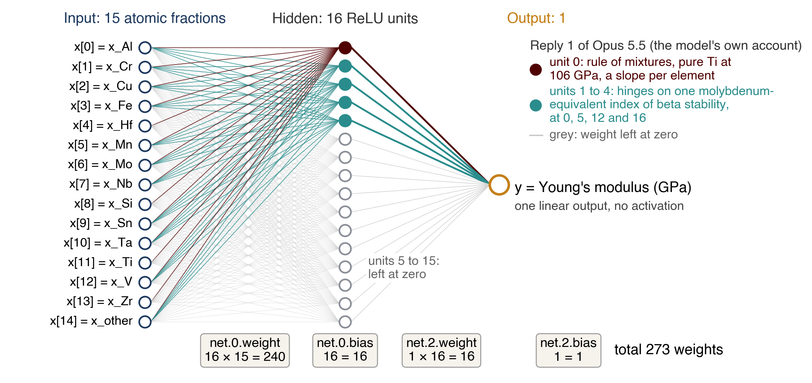

MATERIALS SCIENCE & ENGINEERING
TEXAS A&M UNIVERSITY
Department of Materials Science and Engineering
18

h1 = relu(net.0.weight · x + net.0.bias); y = net.2.weight · h1 + net.2.bias; 15 → 16 → 1, 273 weights (MPEA tasks: 385 and 417)